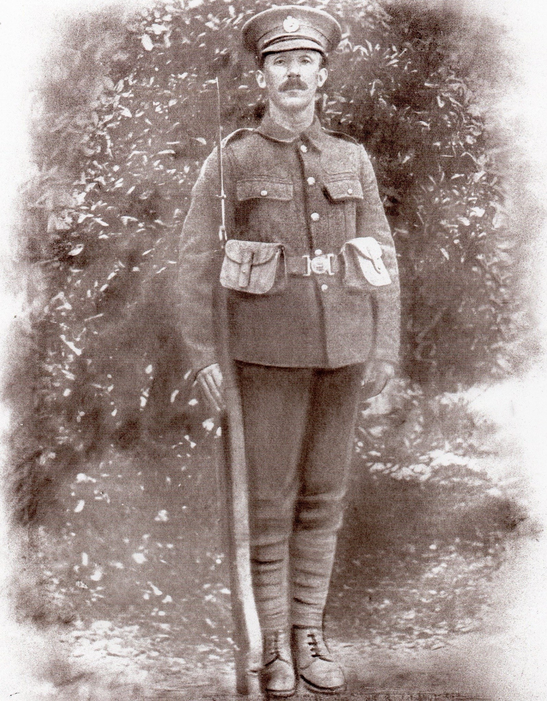

William Henry Wood 1880 - c1952
[ Home ] | [ Calendar ] | [ Surnames Index ] | [ Census Index ] | [ Family History ]A plasterer and the child of James Wood and Elizabeth Jarvis, William Wood was born in Battersea, London, England on Jun 11, 18801,2 and married Martha Myers (with whom he had 5 children: William Henry, Martha Sarah, James, Hilda and Wilhelmina, along with 1 surviving child) in Tynemouth, Tyne and Wear, England around Nov 19074.
During his life, he was living at 40 Burdon Main Row in Tynemouth on Apr 2, 19115; and at 2 Langley Road in Tynemouth on Sep 29, 19391. During 1914, he was serving in the military (regiment: Royal Engineers; Service number: 465445).
He died c. May 1952 in Tynemouth3.
Parents
- James was born c. 1855
- Elizabeth Jane was born in 1857
Children
- William Henry was born in 1908
- Martha Sarah was born in 1910
- James was born on May 12, 1915
- Hilda was born on May 7, 1918
Citations
- 1939 Register - Findmypast (was the head of the household)
- England & Wales births 1837-2006 - Findmypast
- England & Wales deaths 1837-2007 - Findmypast
- England & Wales Marriages 1837-2005 - Findmypast
- 1911 Census for England & Wales - Findmypast (was age 30 and the head of the household)
Media
William Henry Wood

England & Wales births 1837-2006 - BMD/B/1880/3/AZ/000624/251
1939 Register - TNA/R39/2949/2949G/010/23
British Army Service Records - GBM/WO363-4/7316520/31/728
British Army Service Records - GBM/WO363-4/7316520/15/319
British Army Service Records - GBM/WO363-4/7316520/15/323
1911 Census for England & Wales - GBC/1911/RG14/30763/0007/1
Family Tree

Generated by ged2site. Last updated on Jun 11, 2024